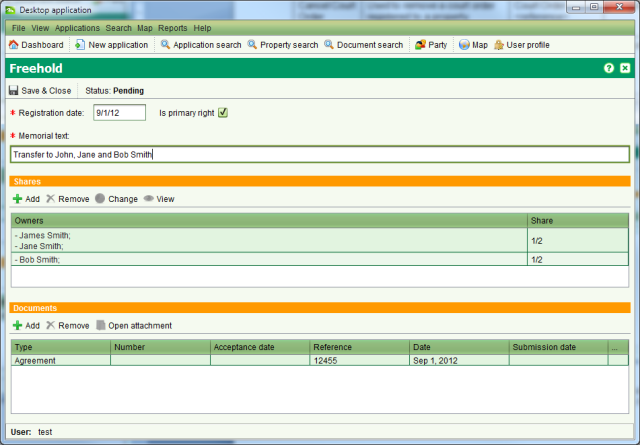

Record Ownership
Ownership details are linked to the primary right for the property and each property should
only have one active primary right. The primary rights supported by SOLA Samoa are Freehold,
Leasehold, Customary and Government. These rights represent the estate type for the property.
To create a primary right and record ownership details on a new property you can use the
Create New Title or Convert to Title services.
There may also be situations where the property information migrated from LRS does not
include ownership details. In this case you can add the ownership details to the property
using the Change Estate Type or Correct Registry services. The Record Proclamation service
can also change the estate type of a property when it is taken for public purposes.
Steps
-
-
 Start a service that supports creating
a new primary right on the property. The Property Details screen will open.
Start a service that supports creating
a new primary right on the property. The Property Details screen will open.
-
On the Rights / Restrictions tab, the select the type of primary right to create (one
of Freehold, Leasehold, Government or Customary) and click the
 Create tool to create a pending primary right and open the
Ownership screen.
Create tool to create a pending primary right and open the
Ownership screen.

Ownership Details
-
-
Tick the Primary Right checkbox (if not checked) to indicate this is the primary right
for the property, update the Memorial text and add references to documents that confirm
the ownership details.
-
Ownership rights consist of one or more shares which are expressed as fractions.
The fractions from all current shares on the property must sum to 1. To enter a new
share for the property, click
 Add in the
Shares section.
Add in the
Shares section.
-
A share may be allocated to one or more parties. A party can be an individual or an
entity. Shares that are allocated to more than one individual or more than one entity
are considered undivided (a.k.a. joint tenants). This means SOLA does not record the
exact share for each party simply that multiple parties participate in the same share.
The following illustrates an undivided share between John and Jane Smith. In this
case the share is 1/2 meaning John and Jane own a half of the property between them,
however the percentage owned by John vs the percentage owned by Jane is not
specified.
Share Details
-
-
To add parties to the share, clickAdd.
This will open the Party Details screen allowing you to enter in details for an
individual or an entity. Once the necessary party details have been entered, click
 Save & Close.
Save & Close.
New Party
-
-
Once all parties have been added to the share, clickSave & Close on the Share Details screen and once all
shares have been added to the primary right, click Save and Close on the Ownership screen. The Property
Details screen will then show a new pending primary right.
Pending Primary Right
-
-
If you need to make further changes to the ownership information, select the pending
primary right in the Rights / Restrictions tab and click the
 Edit tool.
Edit tool.
-
If you need to remove the pending ownership details completely, use the
 Remove tool on the Rights / Restrictions tab.
Remove tool on the Rights / Restrictions tab.
-
Save changes to Property Details and
continue processing the service and application as required.